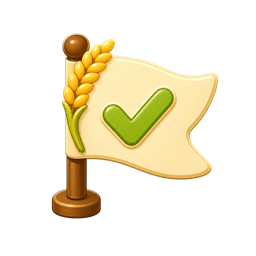
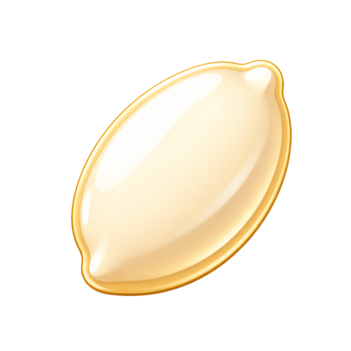
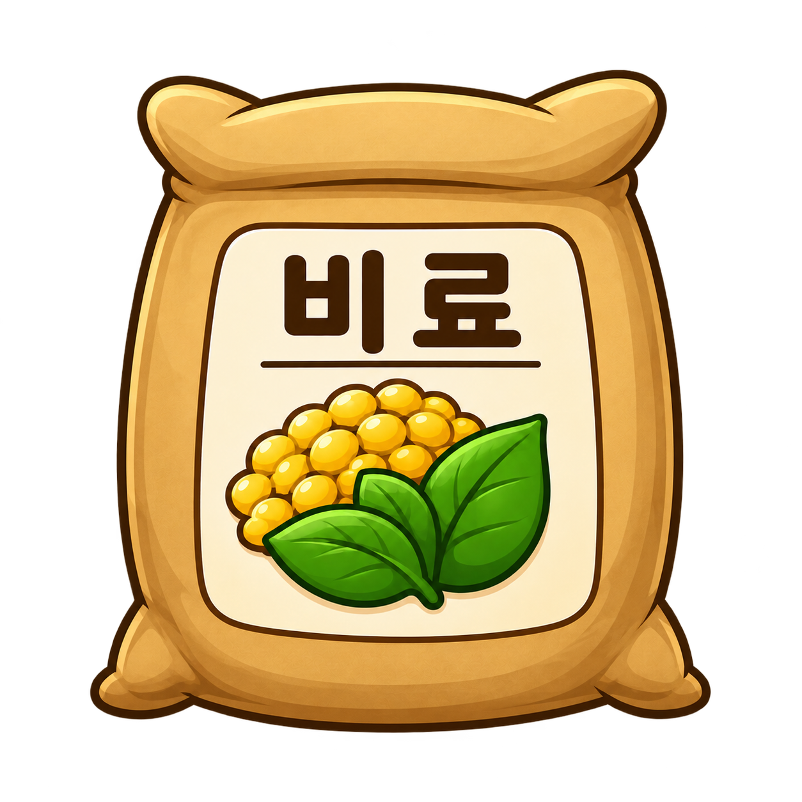
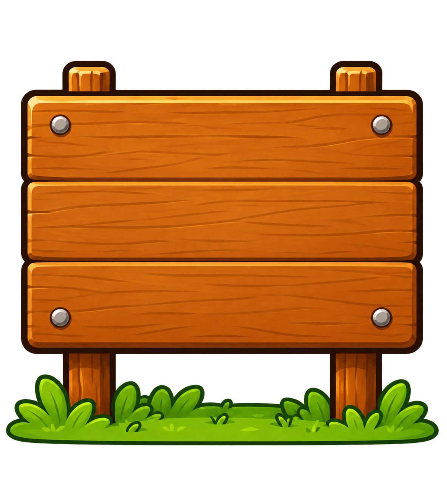
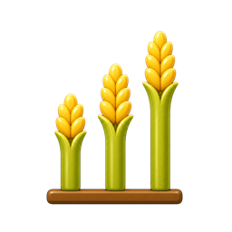
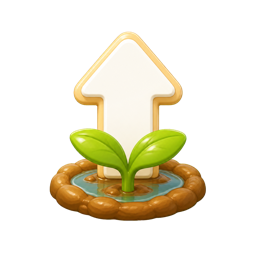
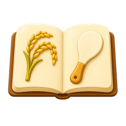

최종 목표 작은 쌀 축제 준비 중누적 소비량으로 게임 LV.12 달성

보유 쌀알
비료 (부스터)
오늘 아침밥, 우리쌀로 시작하세요
다음 LV까지 필요한 쌀 소비량: 1kg

최종 목표 작은 쌀 축제 준비 중누적 소비량으로 게임 LV.12 달성

활성 효과 효과 없음레시피를 소비하면 수확 효율이 잠시 또는 영구적으로 좋아집니다.

업그레이드 수확 장비 강화
레시피 0/11 해금좌우로 드래그하거나 스와이프해 보상을 확인하세요.
내 친구 코드: -